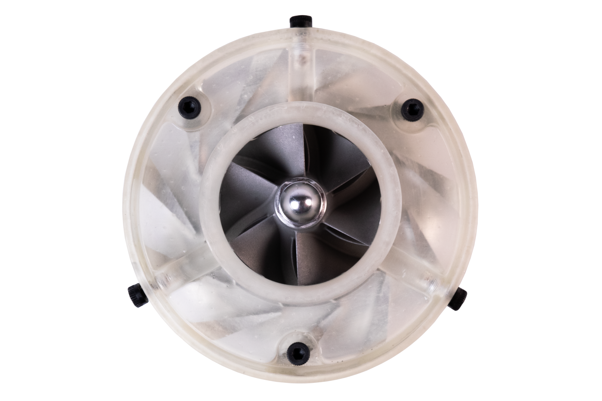
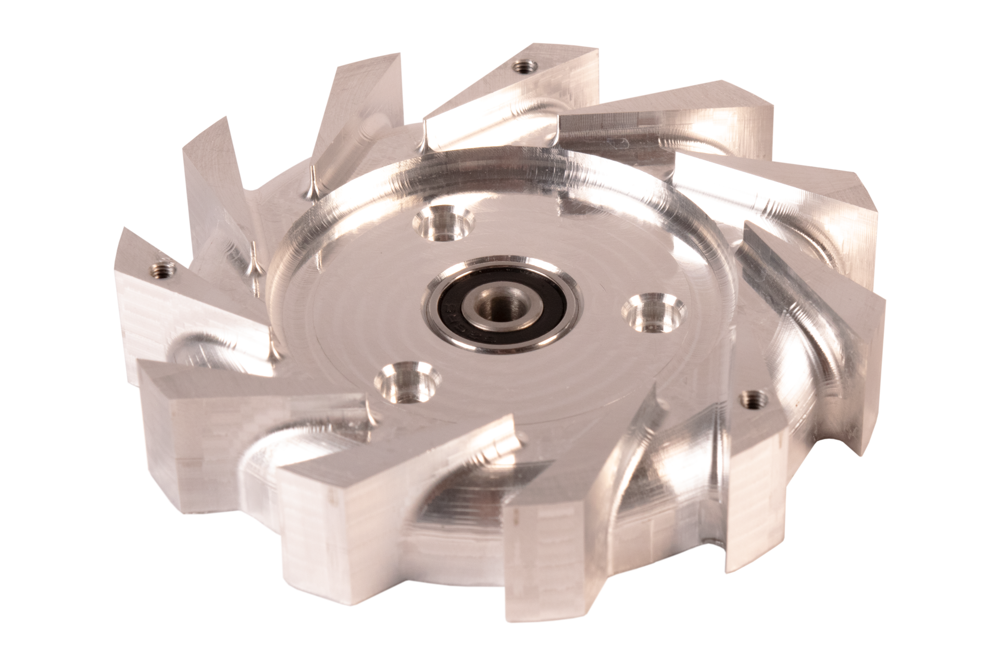
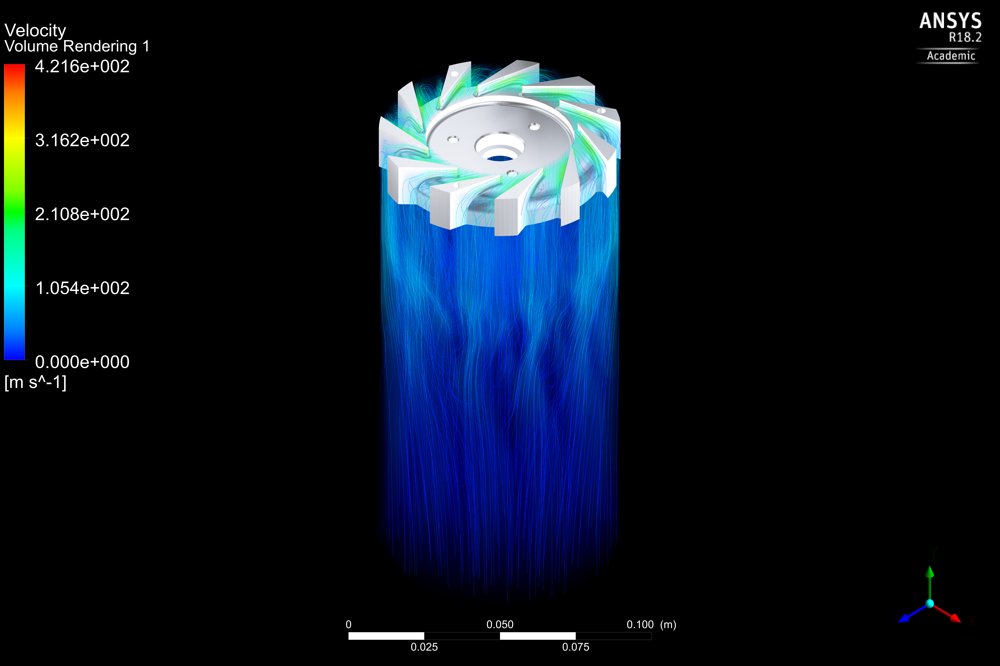
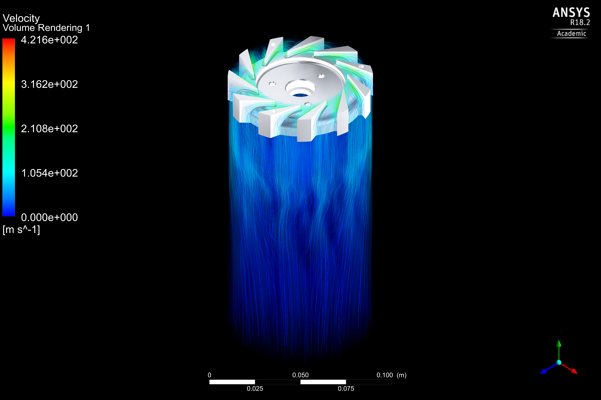

Vibration Balancer
A dynamic rotor balancing machine for turbojet research
I machined a radial diffuser for a micro trubojet engine.

The three goals for the project were to learn Ansys CFD, practice CNC machining, and get one step closer to building a jet engine of my own. The diffuser is designed to recover additional pressure from the high-velocity airstream generated by the centrifugal compressor. This characteristic made it an interesting part to study/optimize with CFD analysis. Its complex features and curvature also presented a fun fabrication challenge.
The diffuser uses 11 guide vanes to divert the air around the diffuser and contribute to the pressure recovery. The angle of the guide vanes was chosen to match the incident airstream from the compressor to prevent flow separation. This angle was derived using velocity triangles and by applying the Euler turbomachinery equations to the compressor component.
 I machined the Diffuser on a 3-axis CNC mill. It was my first time working with curved surfaces and while the toolpath could use some optimization, I was pleased with the final results.
In my first attempts at modeling the system, I used a sliding mesh to model the spinning compressor pushing air through the diffuser in a transient simulation. This ambitious approach proved to be challenging to run and I struggled to get sensible results.
Later, I simplified the effects of the compressor to a prescribed velocity profile at the
inlet of the diffuser rather than having to simulate that whole subsystem.
The velocity profile was calculated using the Euler turbomachinery equations used in the initial diffuser design.
 

With these first-pass analyses, I got hands-on experience working with Ansys Fluent and the CFD post-processor.
While my results lean more towards "colorful" rather than "computational", I can already think of several improvements that I would make to my simulation in a future revision.
The next step for this project will be to spin the rotor with an electric motor and measure the pressure and velocity at the compressor outlet. This data can then be compared to the CFD results and analytical calculations to find areas of refinement in the design and modeling techniques.
A dynamic rotor balancing machine for turbojet research

My contibutions on the Olin Electric Motorsport formula SAE team

A full-featured avionics suit developed for high-power model rockets